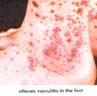

SYSTEMIC IC-MEDIATED DISORDERS
The typical example of acute systemic IC mediated disorder is serum sickness (SS). Since E. von Behring and Sh. Kitasato (1890) have proposed to treat diphtheria with horse anti-diphtheric serum, this sickness became a frequent complication in patients getting large amounts of foreign sera and serum products. It was in children treated with anti-diphtheric serum, that O. Schick and C. von Pirquet have originally described clinical manifestations of this disorder (1902). Now serum sickness is much less common. But still its cases are reported, e.g. in patients treated with horse antithymocyte globulin for autoimmune aplastic anemia. Within 1st week from the injection of alien protein antibodies against foreign epitopes are produced (first phase) and form the IC in circulation. Considerable part of these IC is than deposited on vascular walls and in various tissues (phase 2). Finally, the mechanisms, described above, cause local inflammation around the sites of IC deposits (phase 3). This step is achieved approximately to 8th-10th day from the moment of injection. Inflammation and cytokine release cause bright clinical manifestations of serum sickness, including fever, leukocytosis, hives, joint pain, lymphadenopathy, proteinuria, hypocomplementemia, sometimes hemorrhagic rash. All pathogenic mechanisms referred to in previous chapter interplay in pathogenesis of serum sickness. The role of anaphylotoxin complement fragments is, probable, very essential, because some symptoms of SS resemble true anaphylaxis. The manifestations of SS are obvious until free antigen is still in bloodstream (excess of Ag, soluble IC formation). Upon elimination of free Ag the symptoms decline. But SS stays sensitization to provoking antigen. Repeated injection may cause systemic anaphylaxis of anaphylactoid reaction. In persistent antigenemia SS may take subacute or chronic course with necrotizing vasculitis, glomerulonephritis and joining of other hypersensitivity mechanisms (e.g. DTH) to IC mediated background. The subacute or chronic exposure to IC may be observed not only in SS, but also in prolonged infections (e.g. streptococcal) and in chronic relapsing autoimmune diseases (like systemic lupus erythematosus). In all these cases the general picture has similar features.

The morphologic consequences of immune complex injury are dominated by vasculitis, with deposits of fibrinoid and intense neutrophilic exudation permeating the entire arterial wall, much like the changes that we shall describe for polyarteritis nodosa. Affected glomeruli are hypercellular because of swelling and proliferation of endothelial and mesangial cells, accompanied by neutrophilic and monocytic infiltration. The complexes can be seen on immunofluorescence microscopy as granular lumpy deposits of immunoglobulin and complement, and on electron-dense deposits along the glomerular basement membrane. Endocarditis takes the form of edema and increased vascularity of the heart valves, and the vegetations that develop over the inflamed valves have more than a passing resemblance to acute rheumatic lesions. In due course all lesions tend to resolve, owing to catabolism of the immune complexes. This is particularly true if the disease results from a single large exposure to antigen (e.g., acute poststreptococcal glomerulonephritis and acute serum sickness). Often, however, despite the fact that the morphologic changes and other findings suggest immune complex disease, the inciting antigens are unknown.NEXT CHAPTER
OR